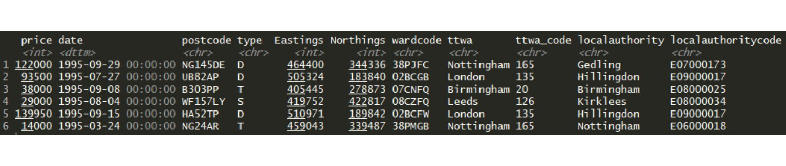

7 Loading the house price data
OK, let’s get stuck in to the data we’re going to use. You can use the file pane, bottom-right, to have a look at the files. Click on the ‘data’ folder: as well as the little example dataframe we just looked at, this folder contains the following file:
- landRegistryPricePaidTopTTWAs.rds: a selection of England’s ten largest cities (by count of sales).
It is in RDS format: these are compressed R objects - they’re much smaller files than CSVs would be.
Let’s load the data. Try a hugely useful autocomplete feature: when typing the file name, get ‘data/land’ typed and then press CTRL + SPACE: this should list file names in the data directory. We’re after this one:
sales <- readRDS('data/landRegistryPricePaidTopTTWAs.rds')The head function will show the top few rows …
head(sales)… and will look something like this:

Each row is a single property sale. As you can see, the data has eleven columns with the following variables:
- price: the final sale value of the property
- date: when it was sold, to the day. This field is in a format that R knows is a date.
- postcode: the location of the property being sold
- type: whether the property is a detached house (D), a semi-detached house (S), a terraced house (T) or a flat (F).
Those four are all from the Land Registry data. Then we also have some extra location information:
- Eastings and Northings: these two columns give the exact geographical location for the postcode. (Its centroid.)
- wardcode: these are codes for the English ward the sale is in. There are many of these for each city and town.
- ttwa and ttwa_code: these are the travel to work area the sale is in. TTWAs are designed to capture each commuting area, so cities and towns will usually be at the centre of them.
- localauthority and localauthoritycode: we’ll use this later to match to wage data and work out a consistent house price metric.
Checking what time period the data covers with the range function, we can see we’ve got house sales from 1995 up until mid-June this year (2017) - we’ve got a bit more than two decades worth:
range(sales$date)## [1] "1995-01-01 UTC" "2018-12-23 UTC"TIP! If you need to read data in from a flat file like a comma-separated variable file, use the readr package from the tidyverse. We’ll be using this later. Base R reads csvs in with read.csv(). readr uses read_csv - using an underscore not a dot. Why use readr? It takes care of several otherwise annoying data format issues - most usefully for us, if you have dates in there, it makes them ready to be used straight away.
We’ll get to know the geographies better as we visualise them. But first…